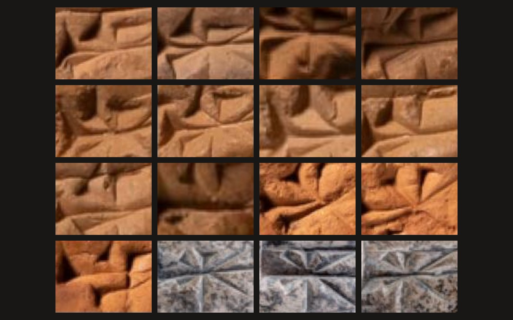
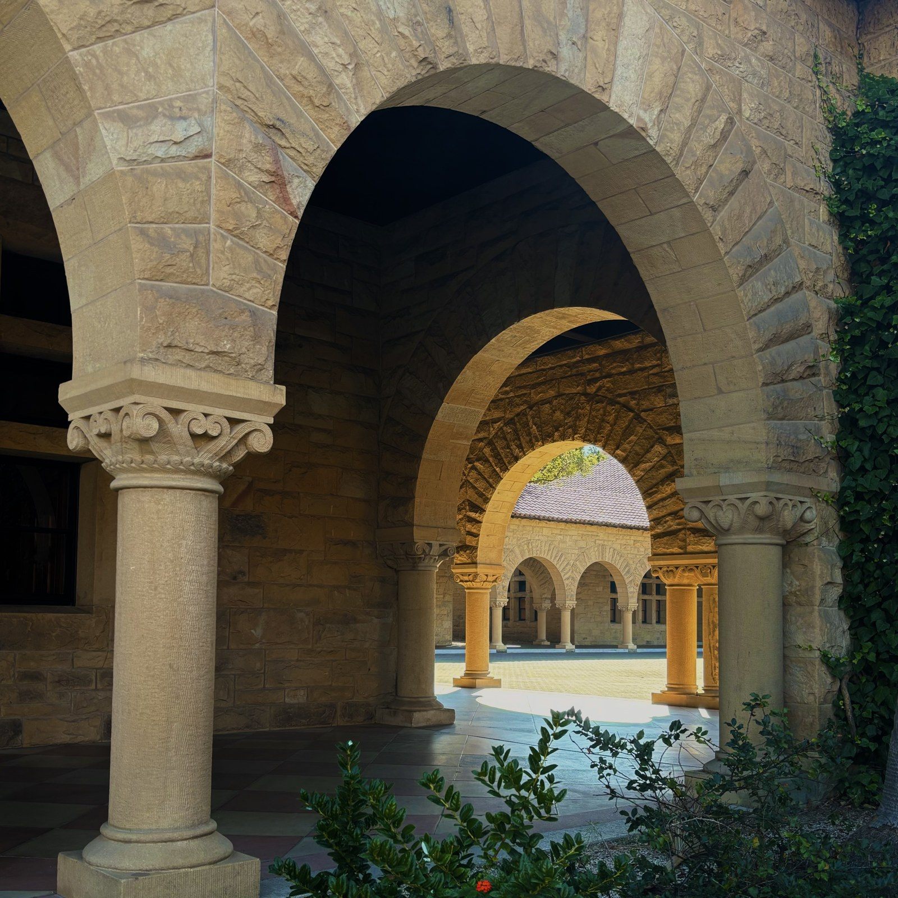
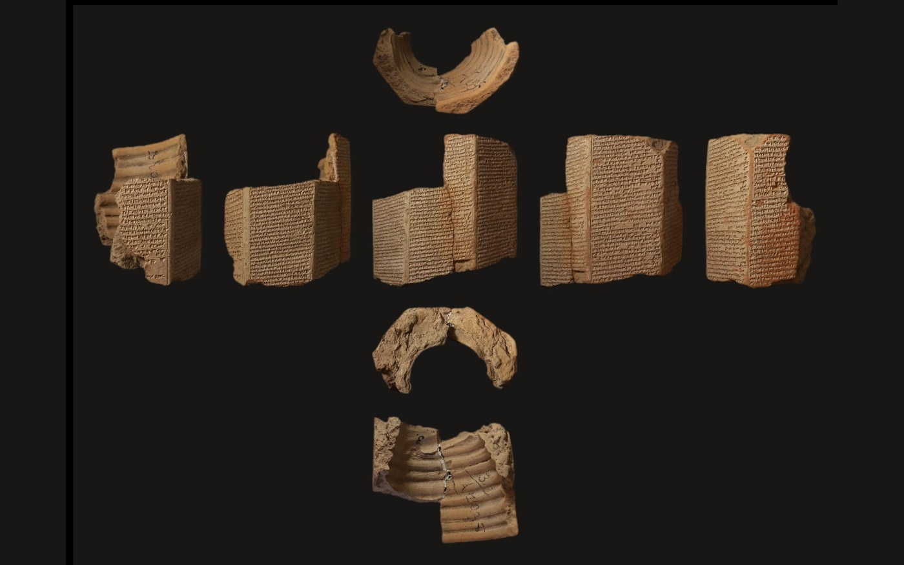

Projects
Scroll →
Emergent Ventures · 2026Predicting cuneiform tablet provenance
A classifier that predicts where tablets are from by isolated sign images. Winner of the Mind Bytes computing award.
Read the full entry
𒆠 𒀭 𒄑
Digital Pasts Lab · 2026
Determinatives in Akkadian texts
Two ongoing projects with Digital Pasts Laboratory; using statistical analysis and language models in order to investigate the significance of classifier characters in Akkadian.
Read the full entry
Script Encoding Initiative · 2025Invisible Connectors: ZWJs and ZWNJs from Arabic to Emoji
How two invisible Unicode characters shape Arabic, Indic scripts and emoji, traced through Stanford’s Unicode archives.
Read on the SEI blog
Institute for the Study of Ancient Cultures · 2025Tablet Collection Digitization
Projects with the ISAC: Digitizing the collections, photographing Ashurbanipal’s prism fragments, and translating tablets for the Nippur Publication Project.
Read the full entry